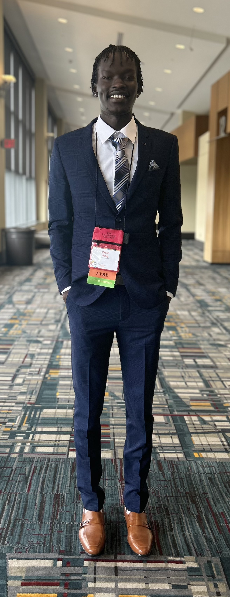

Hi!👋🏿
My name is Wech Ring and I am currently a rising sophomore attending Johns Hopkins University, pursuing a dual degree in Computer Science and Behavioral Biology.
This summer, I had the incredible opportunity to conduct research on regarding Human-Robot Interactions (HRI) and Human-Computer Interactions (HCI) with Yale University's Interactive Machines Group.
Through experiences like these I had learned the importance of adaptability and . With the fast pace life style of gradute student life I was
met with lots of work with little time. Being able to manage my time wisely I was able to complete all that was needed of me and help out where it was needed.
My long-term goals involve attending graduate school, where I plan to specialize in either becoming a general surgeon or a software engineer.
Outside of academics, I actively participate in sports, particularly basketball, and I currently represent Johns Hopkins University as a member of the
Track and Field Team, which recently achieved victory as Indoor Conference Champions. Additionally, I cherish spending quality time with my friends
and find enjoyment in playing video games whenever I have some free time. I am determined to make the most of my college experience, both academically and personally,
as I strive to become a successful professional while also nurturing my passions and maintaining a balanced lifestyle.